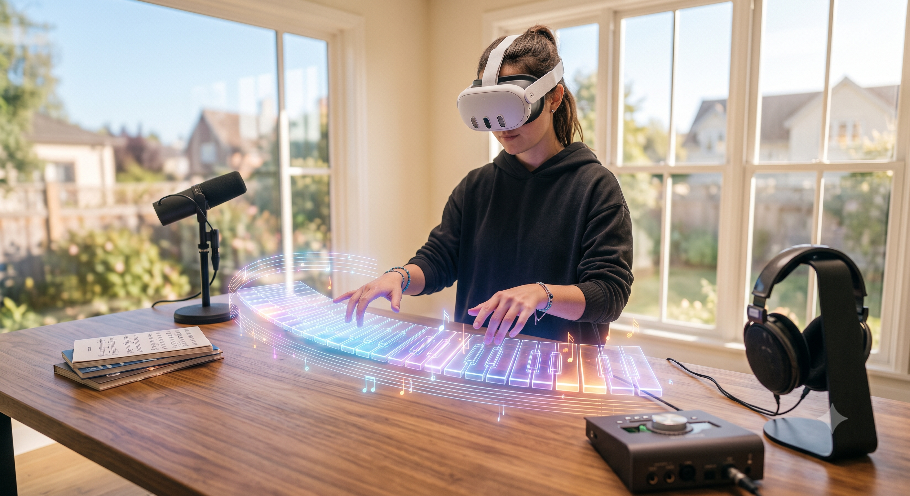
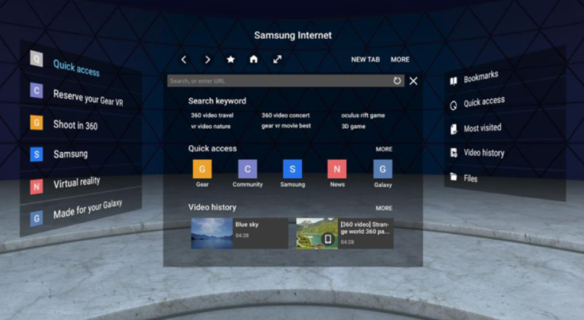
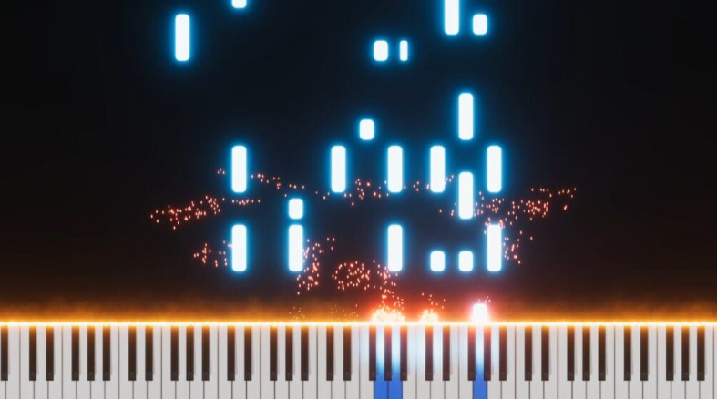

허공의 가상 건반을 손으로 직접 누르며 연주합니다.
원하는 MIDI 파일을 떨어지는 음표로 변환합니다.
빛을 따라 누르며 자연스럽게 곡을 익힙니다.
세 단계면 충분합니다
헤드셋을 쓰면 눈앞 공간에 건반이 생성됩니다.
내장 곡 또는 직접 넣은 MIDI에서 고릅니다.
건반에 닿는 빛을 손으로 따라 누르며 연주합니다.



출시 소식을 가장 먼저 받아보세요.
AR Étude는 "악보 없이도 누구나 피아노를 칠 수 있다면"이라는 생각에서 시작한 작은 프로젝트입니다. Meta Quest 3 위에 가상 건반을 띄워 그 아이디어를 실험하고 있습니다.